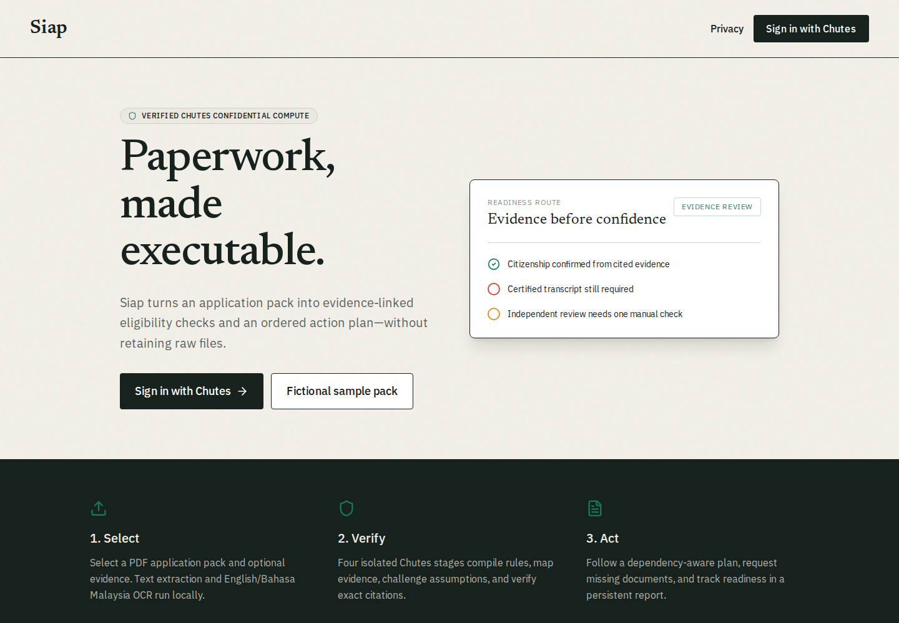

Full-stack development · AI automation · Applied ML
I build systemsthat thinkand ship.
I’m Ahmed—a computer science student and product engineer turning messy data, demanding workflows, and ambitious ideas into software people can actually use.
Real products, hackathon builds, and data systems. Every one started with a concrete problem and ended with working software.
siap-chutes.vercel.app

Privacy-first AI2026
Siap
Turns dense application packs into cited eligibility checks and an ordered action plan using four parallel confidential-compute agents—without retaining raw files.
Predicts turbofan failure before it stops production. The system estimates remaining useful life, detects degradation, explains sensor drivers, and prioritizes maintenance.
Twenty-five original public builds across product engineering, data, AI, automation, and early web experiments. Forks, the portfolio itself, and personal projects are excluded.
Messy inputModelEvidenceUseful action
What connects the work
Complexity in. Clarity out.
The stack changes. The job stays the same: understand the real problem, make the intelligence legible, and get a reliable product into someone’s hands.
01
Product engineering
Next.js, React, TypeScript, realtime backends, authentication, and interfaces that hold up beyond the landing page.
02
Applied intelligence
AI agents, grounded outputs, NLP pipelines, model evaluation, forecasting, and automation with explicit failure paths.
03
Data systems
Feature engineering, analytics dashboards, explainability, operational metrics, and evidence that supports a decision.
Open channel
Have a hard problem? Send it my way.
I’m open to internships, collaborations, ambitious builds, and conversations about AI products that should actually exist.